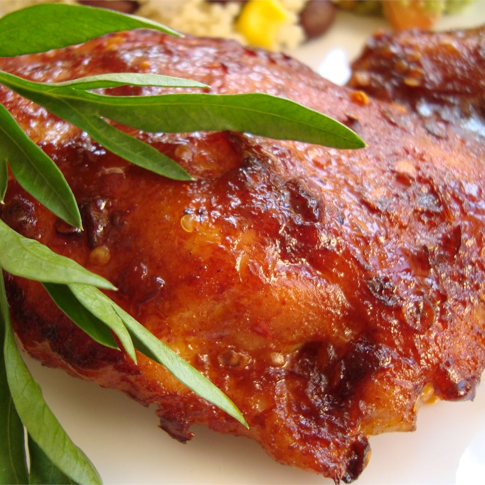

Easy Spicy Mexican-American Chicken

A spicy tangy chicken dish!
You need these things!
- ½ cup Mexican-style hot sauce (such as Valentina)
- 1 tablespoon paprika
- 1 tablespoon cayenne pepper
- 1 tablespoon brown sugar, or more to taste
- 4 chicken thighs
Now do this!
- Preheat oven to 400 degrees F (200 degrees C). Grease a small baking dish.
- Mix the hot sauce, paprika, ground cayenne pepper, and brown sugar in a bowl, and stir until the mixture is well combined. Place the chicken thighs in the baking dish, and coat them with a layer of sauce. Cover the dish with foil
- Bake in the preheated oven for 20 minutes. Remove the foil, and bake until the chicken has cooked through, and the sauce has thickened and started to brown, about 20 more minutes.
Back to Homepage